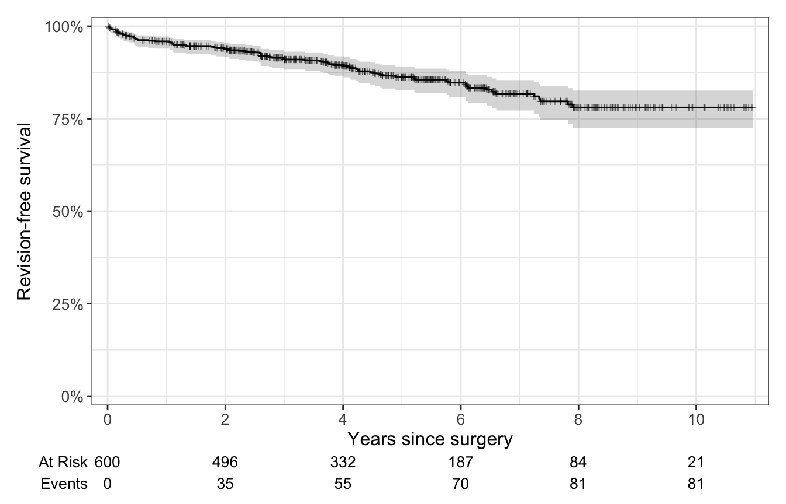
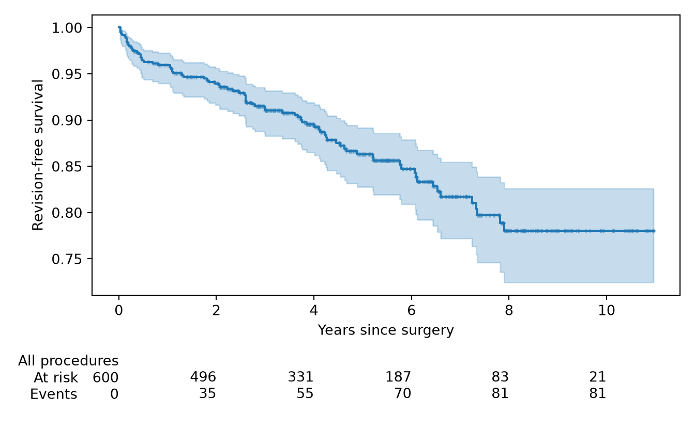

Censoring, time zero, Kaplan-Meier curves with numbers at risk, survivorship at 2, 5 and 10 years, median follow-up, the log-rank test, and competing risks.
“How long do the implants last?” is the central question of arthroplasty research, and it needs its own methods. Patients join the study over several years and are followed for different lengths of time, and most of them are never revised. Survival analysis uses every patient’s follow-up for as long as it lasts.
Pages 4, 6 and 8 each showed one survival method in a few steps. This page covers the whole method: - what censoring is - how to set up the data - how to read and report a Kaplan-Meier curve - how long the patients were followed - how to compare groups - what to do when patients die before they can be revised
Run the code blocks in order, from the top: later blocks use the packages and data loaded earlier.
To keep the code short, the examples use every case, including the 80 patients who had both sides operated on. In a real study, decide how to handle them (page 14) and say what you did.
What censoring means
Picture six patients, each followed from surgery until either a revision or the end of their follow-up:
Patient
Years followed
Revised?
A
1
yes
B
2
no: the study closed
C
3
yes
D
4
no: moved away
E
5
yes
F
6
no: the study closed
Patients B, D and F are censored. We know they went at least that long without a revision, but not what happened afterwards. Censoring isn’t missing data: it’s partial information, and survival methods use all of it.
Two simple summaries both get this wrong: - “3 of 6 (50%) were revised” ignores time. Patient B was followed for only 2 years, so B’s implant never had the chance to fail at 4 or 5 years. - Dropping the censored patients (“3 of 3 were revised”) throws away the years B, D and F spent without a revision.
The Kaplan-Meier method gets it right. It moves through time and recalculates at each revision, using only the patients still being followed (at risk) at that moment:
Reading the output, one revision at a time: - Year 1: 6 patients at risk, 1 revised. Survival = 5/6 = 0.833. - Year 2: B is censored. Nothing happens to the curve, but the at-risk group shrinks to 4. - Year 3: 4 at risk, 1 revised. Survival = 0.833 × 3/4 = 0.625. - Year 5: 2 at risk (D was censored at year 4), 1 revised. Survival = 0.625 × 1/2 = 0.3125.
So the estimated chance of a revision by 5 years is 1 − 0.3125 = 69%, not 50%. Each censored patient counts fully while they’re followed and then leaves the at-risk group.
Note🔍 Under the hood: the product-limit formula
At each time \(t_i\) when at least one revision happens, with \(n_i\) patients at risk and \(d_i\) revisions, the chance of getting past \(t_i\) unrevised is \(1 - d_i/n_i\). Kaplan-Meier survival at time \(t\) multiplies these together for every revision time up to \(t\):
This is why the method is also called the product-limit estimator. Censored patients appear only in the \(n_i\) of the revision times before they leave.
Warning⚠️ Watch out: censoring must be unrelated to the outcome
Kaplan-Meier assumes a censored patient has the same future risk as the patients still being followed. That’s reasonable when follow-up ends because the study closed. It isn’t when patients stop coming back because their hip hurts, or stay away because it’s perfect. If many patients are lost to follow-up, say how many and why.
Time zero and the event
Every survival analysis needs two definitions, fixed before you look at the results:
Time zero, when the clock starts. For implant survival it’s the date of surgery: every patient starts at the same clinical moment. Starting at the first clinic visit instead would ignore revisions that happened before that visit.
The event, what stops the clock. Here it’s revision for any reason: any reoperation that removes or exchanges a component. Other studies use aseptic revision, or any reoperation. Choose one in advance and define it in the Methods.
Real data rarely arrive as “years followed” and “revised: yes/no”. You build those columns from dates. The practice cohort already has them: followup_years and event_status, where 0 means censored, 1 means revised and 2 means died without a revision. Here’s how to make them from a table of dates, for four made-up patients:
P1 was revised in 2019 and died in 2023. The revision came first, so P1’s follow-up ends at the revision, 3.30 years after surgery.
P2 died 3.21 years after surgery without a revision. Death ends the follow-up: P2 can never be revised. (The section on competing risks explains why that matters.)
P3 was alive and unrevised at the last visit: censored at 5.38 years.
P4 was revised 99 days after surgery, at 0.27 years.
Warning⚠️ Watch out: follow-up ends at the last visit, not today
Don’t set every unrevised patient’s end date to the date you pulled the data. A patient last seen in 2021 might have been revised elsewhere since. Censor at the last date you know the implant was in place. And check that no event date comes before the surgery date: it’s always a data-entry error.
The Kaplan-Meier curve
Now the practice cohort: 600 procedures, each followed from surgery to revision, death or the last visit.
cohort <-read_csv("data/cohort.csv", show_col_types =FALSE)km <-survfit2(Surv(followup_years, revised) ~1, data = cohort,conf.type ="log-log") # the CI method lifelines useskm |>ggsurvfit() +add_confidence_interval() +add_censor_mark(size =1, alpha =0.4) +# a tick for each censored patientadd_risktable(times =c(0, 2, 4, 6, 8, 10)) +scale_ggsurvfit(x_scales =list(breaks =c(0, 2, 4, 6, 8, 10))) +labs(x ="Years since surgery", y ="Revision-free survival")

from lifelines.plotting import add_at_risk_countscohort = pd.read_csv("data/cohort.csv")km = KaplanMeierFitter(label="All procedures").fit(cohort["followup_years"], event_observed=cohort["revised"])fig, ax = plt.subplots(figsize=(7, 4.5))km.plot_survival_function(ax=ax, show_censors=True, # a tick for each censored patient censor_styles={"ms": 3, "alpha": 0.4}, legend=False)ax.set_xlabel("Years since surgery")ax.set_ylabel("Revision-free survival")add_at_risk_counts(km, ax=ax, xticks=[0, 2, 4, 6, 8, 10], rows_to_show=["At risk", "Events"])plt.tight_layout()plt.show()

How to read it: - The steps: the curve starts at 100% and drops at each revision. The drops get bigger later on, because each revision is then a bigger share of the fewer patients still at risk. - The ticks mark censored patients. They don’t move the curve; they leave the at-risk group. - The shaded band is the 95% CI. It widens as patients leave. - The table below the plot gives the number of patients still being followed (at risk) at each time, 600 at surgery, 332 at 4 years and 84 at 8 years, and the revisions so far. Always publish the numbers at risk with the curve: they tell the reader how much to trust each part of it.
Warning⚠️ Watch out: the tail of the curve
By 10 years only 21 procedures are still followed, so each late revision moves the curve a lot. Don’t draw conclusions from the far right-hand end. A common rule of thumb is to stop drawing the curve once fewer than about 10% of patients (here, 60) remain at risk.
Tip🔀 R vs Python: the confidence band
R’s survfit() uses a “log” CI by default; lifelines uses “log-log”. We set conf.type = "log-log" in R so the two match, as on page 4. The numbers at risk can differ by one or two: R counts the patients followed for at least 4 years, lifelines those followed for more than 4 years, so a patient censored at exactly 4.00 years is in R’s count only. lifelines’ add_at_risk_counts() also adds a row of censored patients unless you choose rows with rows_to_show.
Survivorship at 2, 5 and 10 years
Papers report the curve at fixed times: the survivorship, the percentage of implants still unrevised.
for years in [2, 5, 10]: estimate = km.survival_function_at_times(years).iloc[0] ci = km.confidence_interval_survival_function_.loc[:years].iloc[-1] # last step at or before that time at_risk = (cohort["followup_years"] >= years).sum()print(years, round(estimate, 3), ci.round(3).to_list(), at_risk)
survival: 0.939 at 2 years, 0.863 at 5 years and 0.780 at 10 years.
lower 95% CI / upper 95% CI: the CI around each one. The 10-year CI (0.725 to 0.826) is the widest.
n.risk: 496 procedures still followed at 2 years, 263 at 5 years and only 21 at 10 years.
n.event: the revisions since the previous time shown, not the running total.
Methods: Implant survivorship was estimated with the Kaplan-Meier method, with revision for any reason as the end point and the date of surgery as time zero. Patients were censored at death or at their last follow-up. Confidence intervals used the log-log transformation.
Results: Survivorship free of revision was 93.9% (95% CI 91.6% to 95.6%) at 2 years, 86.3% (95% CI 82.8% to 89.2%) at 5 years and 78.0% (95% CI 72.5% to 82.6%) at 10 years, when 21 procedures remained at risk.
Warning⚠️ Watch out: “86% survival” needs its time point, CI and numbers at risk
A survivorship figure means nothing without the time it refers to. Give the 95% CI, and the number still at risk at the time you quote, so readers can see how much data the estimate rests on.
How long were patients followed?
Every survival paper reports the median follow-up. The obvious way to calculate it is wrong:
median(cohort$followup_years) # misleading: revisions and deaths cut follow-up short
[1] 4.365
# reverse Kaplan-Meier: treat "still followed at the end" as the eventreverse_km <-survfit(Surv(followup_years, event_status ==0) ~1, data = cohort)quantile(reverse_km, probs =c(0.25, 0.5, 0.75), conf.int =FALSE)
25 50 75
3.52 5.62 7.93
from lifelines.utils import qth_survival_timesprint(cohort["followup_years"].median()) # misleading: revisions and deaths cut follow-up short
4.365
# reverse Kaplan-Meier: treat "still followed at the end" as the eventreverse_km = KaplanMeierFitter().fit(cohort["followup_years"], event_observed=(cohort["event_status"] ==0))print(qth_survival_times([0.75, 0.5, 0.25], reverse_km.survival_function_)) # 25th, 50th, 75th percentiles
KM_estimate
0.75 3.52
0.50 5.62
0.25 7.93
The plain median, 4.4 years, mixes two things: how long the study watched patients, and how soon they were revised or died. A patient revised at 1 year wasn’t “followed for 1 year” in the sense readers care about. The study would have kept watching them.
The reverse Kaplan-Meier method answers the real question: how long would patients have been followed if nothing had happened to them? It swaps the roles: being censored at the end of follow-up becomes the “event”, and revisions and deaths become the censored observations. The median follow-up is 5.62 years (IQR 3.52 to 7.93).
Methods: Median follow-up was estimated with the reverse Kaplan-Meier method.
Results: The median follow-up was 5.62 years (IQR 3.52 to 7.93).
Comparing groups: the log-rank test
The log-rank test asks whether two or more survival curves differ. At every revision time it compares each group’s observed revisions with the number expected if all groups had the same risk, then adds up the differences across the whole follow-up. It’s the same test as the Mantel-Haenszel (or Mantel-Cox) test in the decision table.
Two groups. In total hips, does the surgical approach (anterior or posterior) affect revision?
Observed / Expected: the posterior hips had 19 revisions where 16.1 were expected; the anterior hips had 18 where 20.9 were expected.
Chisq = 0.9 on 1 degree of freedom, p = 0.340: no clear evidence that the curves differ over the whole follow-up.
But look at the plot. The posterior curve drops sharply in the first months, then the two curves come together (late on they even cross, where the CIs overlap widely). The early revisions are real: by 6 months, survivorship was 88.7% after the posterior approach and 98.6% after the anterior approach.
summary(survfit(Surv(followup_years, revised) ~ approach, data = tha, conf.type ="log-log"), times =0.5)
Call: survfit(formula = Surv(followup_years, revised) ~ approach, data = tha,
conf.type = "log-log")
approach=anterior
time n.risk n.event survival std.err lower 95% CI
0.5000 137.0000 2.0000 0.9859 0.0099 0.9448
upper 95% CI
0.9965
approach=posterior
time n.risk n.event survival std.err lower 95% CI
0.5000 108.0000 14.0000 0.8871 0.0284 0.8168
upper 95% CI
0.9315
for curve in [km_anterior, km_posterior]: ci = curve.confidence_interval_survival_function_.loc[:0.5].iloc[-1]print(curve.label, round(curve.survival_function_at_times(0.5).iloc[0], 3), ci.round(3).to_list())
The log-rank test adds up the differences over the whole follow-up. A large difference in the first months gets diluted by the years after, when the groups differ little, and the test can miss a real difference. Page 14 shows how to detect this and how to model it.
Three or more groups. The same test compares any number of groups. Does revision differ between implants A, B and C?
from lifelines.statistics import multivariate_logrank_testimplant_logrank = multivariate_logrank_test(cohort["followup_years"], cohort["implant"], cohort["revised"])print(implant_logrank.test_statistic, implant_logrank.degrees_of_freedom, implant_logrank.p_value)
33.46861907356945 2 5.399850171504637e-08
Observed / Expected: implant C had 38 revisions where 16.9 were expected. Implants A (25 vs 34.0) and B (18 vs 30.0) had fewer than expected.
Chisq = 33.5 on 2 degrees of freedom, p < 0.001: at least one implant’s curve differs from the others. The test doesn’t say which; page 15 covers comparing pairs of groups. Page 8 gives each implant’s hazard ratio.
Methods: Revision-free survival was compared between groups with the log-rank test.
Results: The log-rank test for revision-free survival across implants gave χ² = 33.5 (df = 2, p < 0.001). In total hip arthroplasty, survivorship at 6 months was 88.7% (95% CI 81.7% to 93.2%) after the posterior approach and 98.6% (95% CI 94.5% to 99.6%) after the anterior approach (log-rank test over the whole follow-up, χ² = 0.9, df = 1, p = 0.340).
Warning⚠️ Watch out: always plot the curves before you trust the test
The log-rank test is most powerful when one group’s risk is a steady multiple of the other’s over time. When the curves cross, as with the surgical approach here, a non-significant test can hide a real difference. And don’t compare groups at one hand-picked time point to get a significant result: decide your time points before you look.
Tip🔀 R vs Python: one function or two
R’s survdiff() takes a formula and handles two groups or more. lifelines has logrank_test() for two groups, which takes each group’s data separately, and multivariate_logrank_test() for any number, which takes a grouping column. They give identical results.
Competing risks: when patients die first
So far, patients who died were treated as censored. That assumes they would have gone on to be revised at the same rate as everyone else. They can’t: a patient who has died can never be revised. Death is a competing risk.
With death treated as censored, 1 − Kaplan-Meier estimates the risk of revision in an imaginary world where nobody dies. In an older population, where many patients die during follow-up, it overstates the real proportion who will be revised. The cumulative incidence function (CIF), estimated with the Aalen-Johansen method, gives the real proportion: the chance of being revised by a given time, allowing for the chance of dying first.
The data need one status column with three values. In the cohort, event_status is 0 for censored, 1 for revised and 2 for died.
z = norm.ppf(0.975)for years in [2, 5, 10]: row = revision.loc[:years].iloc[-1] # last step at or before that time spread = np.exp(z * row["se"] / (row["cif"] * np.log(row["cif"]))) # the log-log CI, as in Rprint(years, round(row["cif"], 3), round(row["cif"] ** (1/ spread), 3), round(row["cif"] ** spread, 3),round(1- km.survival_function_at_times(years).iloc[0], 3))
Reading it: - The revision curve is the cumulative incidence of revision: 5.9% at 2 years, 12.8% at 5 years and 19.3% at 10 years. - The death curve rises faster: 24.0% of patients had died without a revision by 10 years. - 1 − Kaplan-Meier says 22.0% by 10 years. It overstates the real proportion revised by 2.7 percentage points, because it pretends the patients who died could still have been revised.
The gap grows with the number of deaths. It’s small at 2 years, when few patients have died, and largest in older patients (see exercise 2).
Comparing groups: Gray’s test (R only). Gray’s test is the competing-risks counterpart of the log-rank test: it compares cumulative incidence curves between groups. The tidycmprsk package runs it:
The cumulative incidence of revision differed between implants (Gray’s test χ² = 31.5, df = 2, p < 0.001); there was no clear evidence that the cumulative incidence of death differed (χ² = 0.97, p = 0.616).
Methods: The cumulative incidence of revision was estimated with the Aalen-Johansen method, treating death as a competing risk, and compared between implants with Gray’s test.
Results: The cumulative incidence of revision was 12.8% (95% CI 10.0% to 15.9%) at 5 years and 19.3% (95% CI 15.3% to 23.7%) at 10 years, when the cumulative incidence of death was 24.0% (95% CI 19.3% to 29.0%). Gray’s test for the cumulative incidence of revision across implants gave χ² = 31.5 (df = 2, p < 0.001).
Warning⚠️ Watch out: which number answers your question?
Both estimates are useful, but they answer different questions: - 1 − Kaplan-Meier answers “how well does the implant perform while patients are alive?” It’s the usual measure for comparing implants, and registries report it. - The cumulative incidence answers “what proportion of patients will actually be revised?” Use it to counsel patients or plan services, especially for older patients.
Say which one you report. Never call 1 − Kaplan-Meier “the proportion of patients revised” when many patients died.
Tip🔀 R vs Python: which tools
The cumulative incidence: R’s survfit() estimates it whenever the status has more than two levels. In Python, use statsmodels’ CumIncidenceRight(): it gives the estimates and their standard errors but no CI, so the code builds the same log-log CI as R. lifelines also has an AalenJohansenFitter, but it moves tied follow-up times by a small random amount, which can shift an estimate read at exactly 5 or 10 years, so we don’t use it.
Gray’s test: Python has no mature implementation of Gray’s test. Plot the curves in Python, but run the test in R. tidycmprsk’s cuminc() also gives the cumulative incidences, with a slightly different CI method.
Fine-Gray regression models the cumulative incidence with several predictors at once; it’s R only too (page 14).
Exercises
The solutions use the packages and data loaded in the sections above, so run the page from the top first.
1. Compare revision-free survival between total hips (THA) and total knees (TKA). Give each procedure’s survivorship at 5 years with its 95% CI, and the log-rank test.
summary(survfit(Surv(followup_years, revised) ~ procedure, data = cohort, conf.type ="log-log"), times =5)
Call: survfit(formula = Surv(followup_years, revised) ~ procedure,
data = cohort, conf.type = "log-log")
procedure=THA
time n.risk n.event survival std.err lower 95% CI
5.0000 121.0000 29.0000 0.8688 0.0236 0.8145
upper 95% CI
0.9081
procedure=TKA
time n.risk n.event survival std.err lower 95% CI
5.0000 142.0000 37.0000 0.8586 0.0222 0.8086
upper 95% CI
0.8964
survdiff(Surv(followup_years, revised) ~ procedure, data = cohort)
Call:
survdiff(formula = Surv(followup_years, revised) ~ procedure,
data = cohort)
N Observed Expected (O-E)^2/E (O-E)^2/V
procedure=THA 270 37 36.6 0.00342 0.00624
procedure=TKA 330 44 44.4 0.00282 0.00624
Chisq= 0 on 1 degrees of freedom, p= 0.9
for procedure, group in cohort.groupby("procedure"): curve = KaplanMeierFitter().fit(group["followup_years"], group["revised"]) ci = curve.confidence_interval_survival_function_.loc[:5].iloc[-1]print(procedure, round(curve.survival_function_at_times(5).iloc[0], 3), ci.round(3).to_list())
Results: Survivorship free of revision at 5 years was 86.9% (95% CI 81.4% to 90.8%) after THA and 85.9% (95% CI 80.9% to 89.6%) after TKA (log-rank χ² = 0.01, df = 1, p = 0.937).
2. A surgeon asks: “Of my patients aged 75 and over, what proportion will need a revision within 5 years?” Which estimate answers that question? Calculate it, and compare it with 1 − Kaplan-Meier.
TipSolution
The surgeon wants the real proportion of patients revised, and many patients over 75 die during follow-up. That’s the cumulative incidence, with death as a competing risk.
Results: Of the 100 procedures in patients aged 75 and over, 41 ended in death and 13 in revision. The cumulative incidence of revision at 5 years was 13.9% (95% CI 7.8% to 21.8%); 1 − Kaplan-Meier at 5 years was 16.5%.
1 − Kaplan-Meier overstates the real proportion revised by about a fifth.
3. Estimate the cumulative incidence of revision at 5 years for each implant, with death as a competing risk, and write the Results sentence, including Gray’s test.
A 0.097 0.062 0.141
B 0.068 0.037 0.112
C 0.273 0.195 0.356
Python has no Gray’s test; take it from R.
Results: The cumulative incidence of revision at 5 years, with death as a competing risk, was 9.7% (95% CI 6.2% to 14.1%) with implant A, 6.8% (95% CI 3.7% to 11.2%) with implant B and 27.3% (95% CI 19.5% to 35.6%) with implant C (Gray’s test χ² = 31.5, df = 2, p < 0.001).